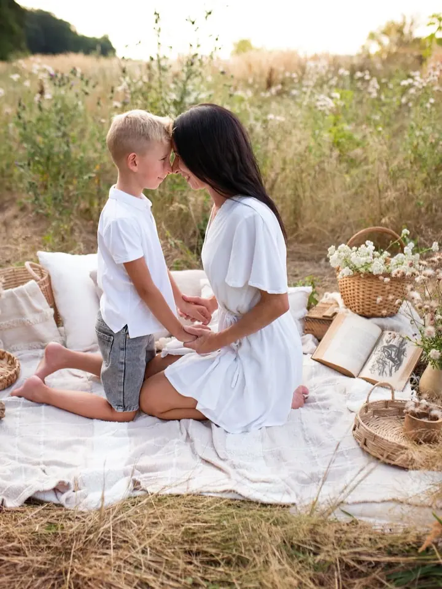
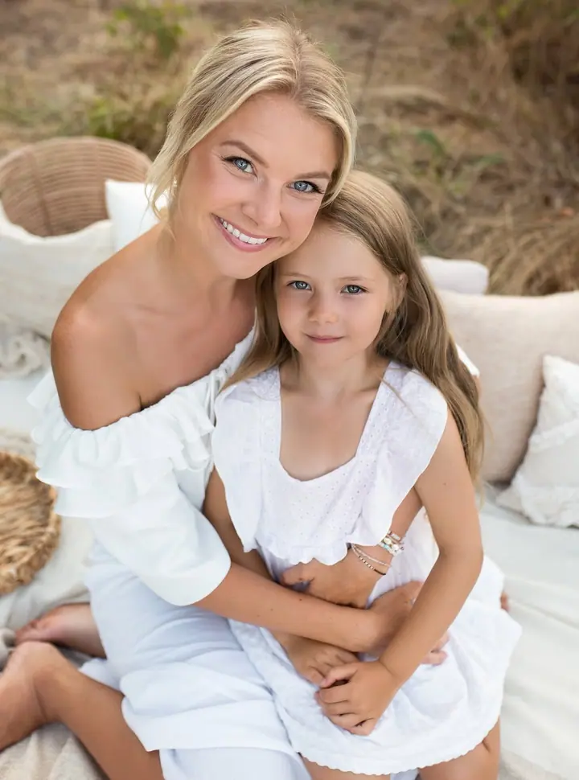
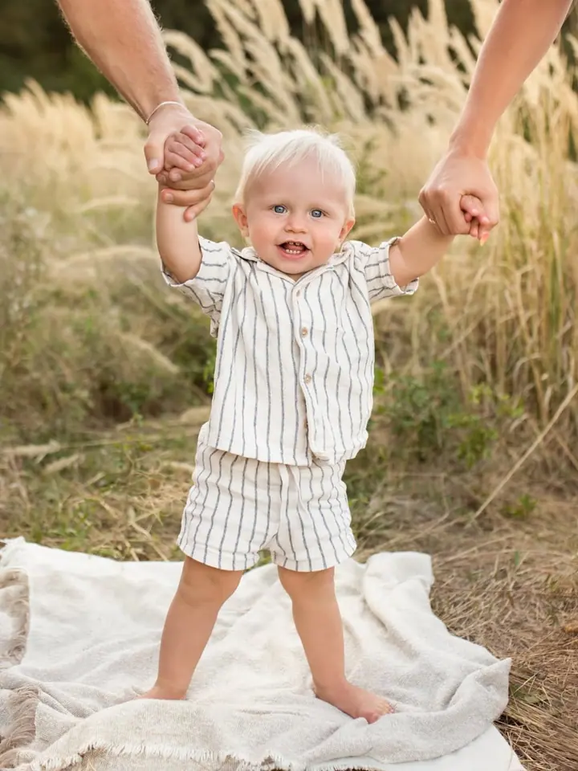

Newborn focení
Focení miminek v prvních dnech života v klidu fotoateliéru. Jemné tóny, měkké deky a čas na všechno, co miminko zrovna potřebuje.

Za značkou Foto Jančovi jsem já, fotografka z Uherského Hradiště. Fotím miminka, celé rodiny i sourozence, kteří si spolu chvíli vydrží v klidu. Fotíme ve fotoateliéru i…
Rezervovat termínFotím newborn, rodinné a těhotenské focení v Uherském Hradišti. Mám vlastní fotoateliér s měkkými dekami, polštáři a teplým světlem, a když je venku hezky, ráda vyrazím i do přírody, do vysoké trávy a podvečerního slunce.


Děti rostou rychleji, než se zdá, a právě proto mě baví zachytit je tak, jak teď opravdu jsou. Ať jde o první dny miminka, pusu mezi sourozenci nebo objetí s mámou, nechávám focení plynout v jejich tempu.
Během roku chystám i sezónní mini focení: jarní, letní, velikonoční a vánoční. Je to kratší a pohodové focení s připravenou dekorací, které se hodí třeba jako dárek pro babičky a dědečky.
Co fotím
Focení miminek v prvních dnech života v klidu fotoateliéru. Jemné tóny, měkké deky a čas na všechno, co miminko zrovna potřebuje.
Rodiče, sourozenci i ti nejmenší pohromadě. Fotíme v ateliéru nebo venku v přírodě, v trávě a v podvečerním světle.
Kratší focení s připravenou dekorací podle ročního období. Jarní, letní, velikonoční i vánoční mini termíny.
Památka na dobu, kdy čekáte miminko. Podle vaší chuti v ateliéru nebo v přírodě.
Postup
Napíšete mi, o jaké focení máte zájem, a společně vybereme termín a místo, ateliér nebo přírodu.
Poradím vám s oblečením a barvami, aby fotky ladily. Dekorace a rekvizity mám připravené.
Fotíme v klidu a v tempu dětí. Na pauzu, krmení nebo přebalení je vždycky čas.
Z focení vyberu ty nejlepší záběry a upravím je v jemných, přirozených tónech.
Otázky
Termín je dobré zamluvit už během těhotenství a přesný den pak upřesníme po porodu, podle toho, jak se miminku i vám bude dařit.
Obojí. Newborn focení probíhá ve fotoateliéru, rodinné a těhotenské můžeme udělat v ateliéru i v přírodě kolem Uherského Hradiště.
Kratší sezónní focení s připravenou dekorací, třeba na jaře, v létě, o Velikonocích nebo před Vánoci. Aktuální termíny zveřejňuji na Instagramu.
Ceník najdete v uloženém příběhu Ceník na mém Instagramu. Ráda vám ho pošlu i e-mailem.